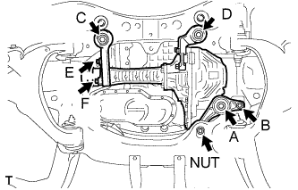

FRONT DIFFERENTIAL CARRIER ASSEMBLY > INSTALLATION |
| 1. INSTALL FRONT DIFFERENTIAL CARRIER ASSEMBLY |
 |
Install the differential support assembly with bolts E and F.
Using a jack, slowly raise the front differential carrier assembly to its installation position.
Temporarily install the front differential support assembly with bolts A and B and the nut.
Temporarily install the bolts C and D.
Tighten bolt A.
Tighten bolt B and the nut.
Tighten bolts C and D.
Connect the breather tube to the front differential union.
| 2. INSTALL FRONT SUSPENSION REBOUND STOPPER SUB-ASSEMBLY LH |
 |
Install the suspension rebound stopper LH with the 3 bolts.
| 3. INSTALL FRONT SUSPENSION REBOUND STOPPER SUB-ASSEMBLY RH |
 |
Install the suspension rebound stopper RH with the 3 bolts.
| 4. INSTALL FRONT DRIVE SHAFT ASSEMBLY LH |
Install the front drive shaft (Click here).
| 5. INSTALL FRONT DRIVE SHAFT ASSEMBLY RH |
| 6. INSTALL FRONT PROPELLER SHAFT ASSEMBLY |
Install the front propeller shaft (Click here).